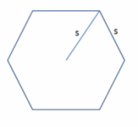
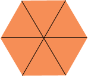
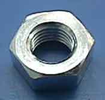

Because a hexagon has an even number of sides, in a regular hexagon, opposite sides are parallel.
| Interior angle | 120° | Like any regular polygon, to find the interior angle we use the formula (180n–360)/n . For a hexagon, n=6. See Interior Angles of a Polygon |
| Exterior Angle | 60° | To find the exterior angle of a regular hexagon, we use the fact that the exterior angle forms a linear pair with the interior angle, so in general it is given by the formula 180-interior angle. See Exterior Angles of a Polygon |
| Area | 2.598s2 approx | Where S is the length of a side. To find the exact area of a hexagon or any polygon, using various methods, see Area of a Regular Polygon and Area of an Irregular Polygon |


In a regular hexagon, the radius equals the side length. That is, a line from the center to any vertex will have the same length as any side.
Because of this, a regular hexagon can be thought of as being made of six equilateral triangles.
| Number of diagonals | 9 | The number of distinct diagonals possible from all vertices. (In general ½n(n–3) ). In the figure above, click on "show diagonals" to see them. See Diagonals of a Polygon |
| Number of triangles | 4 | The number of triangles created by drawing the diagonals from a given vertex. (In general n–2). In the figure above, click on "show triangles" to see them. See Triangles of a Polygon |
| Sum of interior angles | 720° | In general 180(n–2) degrees . See Interior Angles of a Polygon |

Most nuts and bolt heads are made in the shape of a hexagon. Because a hexagon has three pairs of parallel faces, a wrench can be placed over any pair.